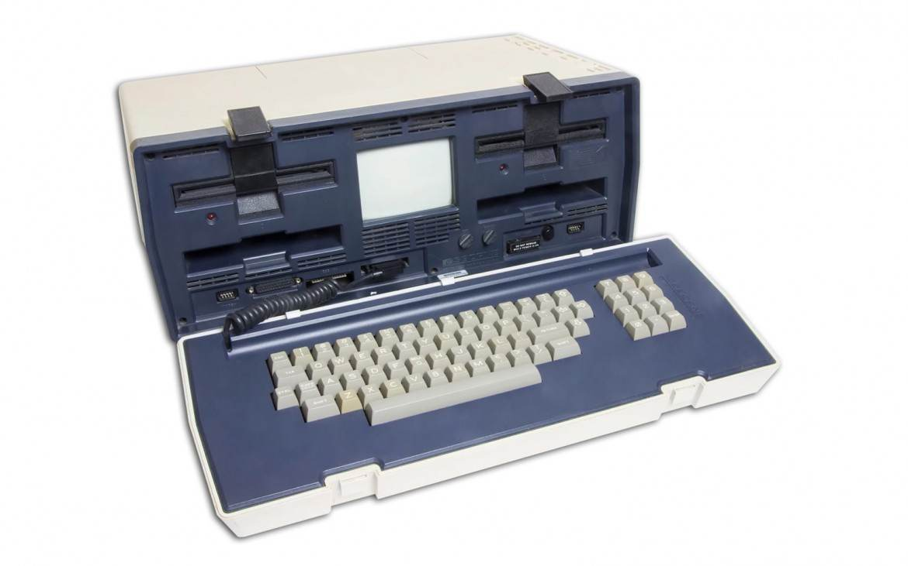
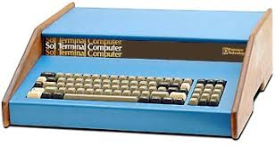

Il primo laptop
L’Osborne è stato il primo computer portatile di massa della storia. Messo in commercio nell’aprile del 1981 dalla Osborne Computer Faire di San Francisco pesava circa 10,7 kg ed aveva un costo di 1.795 $. Il sistema operativo integrato era il CP/M 2.2.
Il primissimo prototipo fu la Xerox NoteTaker, uno dei primi computer portatili. Sviluppato dallo Xerox PARC di Palo Alto, in California, nel 1978. Sebbene non sia entrato in produzione e siano stati costruiti solo una decina di prototipi, ha fortemente influenzato il design dei successivi computer portatili Osborne 1 e Compaq.
|

|
Storia
Dopo la vendita della sua società editoriale per 3 milioni di dollari, Adam Osborne decise di aprire una nuova azienda per iniziare a produrre un nuovo computer che pesasse inferiormente quello degli elaboratori fissi dell'epoca, e che fosse progettato per essere “trasportabile”. Per realizzare la macchinavenne assunto Lee Felsensteinamico di Osborne e che aveva progettato, nel campo dei computer, il Sol-20. Il progetto del computer fu terminato alla fine del 1980, e Osborne assunse Thomas E. Davidson per seguire la realizzazione della macchina. All'inizio del 1981 la società divenne Osborne Computer Corporation, con un capitale di circa 1 milione di dollari.
|

|